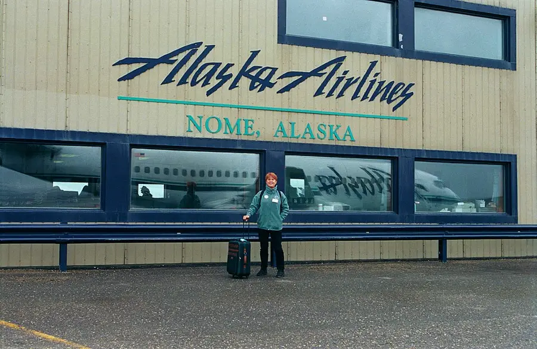

알래스카 항공 Alaska Airlines
알래스카 항공(Alaska Airlines)은 시애틀 터코마·포틀랜드·로스앤젤레스·테드 스티븐스 앵커리지 국제공항을 허브로 사용하는 미국 항공사이다.
최종 업데이트

알래스카 항공은 어떤 브랜드인가
알래스카 항공은 시애틀 터코마 국제공항을 비롯한 네 곳의 국제공항을 허브로 사용한다. 회사명과 달리 본사는 알래스카가 아니라 시애틀 교외 지역인 시택에 자리한다.
1932년 앵커리지와 브리스톨 베이 사이를 운항하는 지역 항공사로 출발한 뒤 반복적인 합병을 통해 알래스카 최대 항공사로 성장했다. 1960년대에는 냉전 시기의 소련에 정기 항공편을 운항했다.
1980년대에는 미국 항공 업계의 규제 완화를 배경으로 빠르게 성장했으며, 다른 항공사들과 코드셰어 협정을 운영한다.
알래스카 항공은 어떻게 시작되고 성장했나
1932년 Linious McGee가 앵커리지와 브리스톨 베이 사이를 운항하는 지역 항공사 마쿠지 항공으로 설립했다. 이후 다른 항공사들과 합병을 반복하며 사업 기반을 넓혔고 알래스카 최대 항공사로 성장했다.
1960년대 냉전 시기에는 소련을 연결하는 정기 항공편도 운항했다. 1980년대에는 미국 항공 업계의 규제 완화를 배경으로 성장 속도를 높였다.
2016년 4월 4일 모기업인 Alaska Air Group이 Virgin America를 인수하겠다고 발표했다.
알래스카 항공의 브랜드 아이덴티티는 무엇인가
시애틀 터코마·포틀랜드·로스앤젤레스·테드 스티븐스 앵커리지 국제공항을 함께 허브로 활용하는 운영 구조가 구분점이다.
알래스카 항공의 대표 제품과 서비스는 무엇인가
시애틀 터코마·포틀랜드·로스앤젤레스·테드 스티븐스 앵커리지 국제공항을 허브로 항공 노선을 운항한다. 알래스카 지역에서 출발한 항공사로서 합병을 통해 운항 기반을 확대했으며, 1960년대에는 소련으로 향하는 정기 항공편도 운영했다.
다른 항공사들과 코드셰어 협정을 체결해 공동으로 노선을 제공한다. 2016년 7월 기준 취항 노선 현황을 운영했으며, 2025년 12월 기준 보유 기종의 평균 기령은 8.9년이다.
알래스카 항공은 지금 어떤 상태인가
모기업은 Alaska Air Group이며 본사는 시애틀 교외 지역인 시택에 자리한다. Alaska Air Group은 2016년 Virgin America 인수 계획을 발표했다.
2025년 12월 기준 항공기를 보유해 운항하며 보유 기종의 평균 기령은 8.9년이다.
알래스카 항공 로고는 어떻게 변해왔나
시기는 위키데이터 로고 기간 또는 위키미디어 커먼즈 파일 정보 기준입니다. 이미지를 누르면 원본 파일과 라이선스를 볼 수 있습니다.
사진으로 보는 알래스카 항공의 역사

자주 묻는 질문
알래스카 항공는 어느 나라 브랜드인가요?
알래스카 항공는 미국의 여행·호스피탈리티 브랜드입니다.
알래스카 항공는 언제 설립되었나요?
알래스카 항공는 1932년 설립되었습니다.
알래스카 항공의 브랜드 아이덴티티는 무엇인가요?
시애틀 터코마·포틀랜드·로스앤젤레스·테드 스티븐스 앵커리지 국제공항을 함께 허브로 활용하는 운영 구조가 구분점이다.
알래스카 항공의 대표 제품은 무엇인가요?
시애틀 터코마·포틀랜드·로스앤젤레스·테드 스티븐스 앵커리지 국제공항을 허브로 항공 노선을 운항한다.
알래스카 항공는 어느 기업이 소유하고 있나요?
모기업은 Alaska Air Group이며 본사는 시애틀 교외 지역인 시택에 자리한다.
알래스카 항공의 창업자는 누구인가요?
알래스카 항공의 창업자는 Linious McGee입니다(위키데이터 기준).
알래스카 항공의 본사는 어디에 있나요?
알래스카 항공의 본사는 시애틀에 있습니다(위키데이터 기준).
출처와 검증
알래스카 항공 관련 참고: 공식 웹사이트 · 위키데이터 Q822614 · 한국어 위키백과 · 영어 위키백과. 브랜드명은 한글과 원어를 함께 표기하되 데이터에 없는 표기는 만들지 않습니다. 기원 국가·설립연도는 검수된 정의문에서 확인된 값을 우선하고, 없을 때만 공식 웹사이트 URL이 일치하는 위키데이터 개체의 값을 씁니다. 탄생일의 월·일은 위키데이터, 위키백과 정보상자, 본문 가운데 같은 연월로 확인되는 값만 싣고, 출처끼리 다르면 싣지 않습니다. 웹 첫 보관은 인터넷 아카이브가 공식 사이트 첫 화면을 처음 보관한 날로, 사이트 개설일과 다를 수 있습니다. 위키데이터 값은 2026-09-14 기준입니다.